Del 6 al 15 de febrer vam participar a la UNIRAID 2026, recorrent més de 3.000 km pel Marroc amb la Lioneta,
el nostre Ford Focus del 1998. Vam travessar camins, dunes, deserts i poblets, descobrint paisatges i escenes que mai oblidarem.
Durant el trajecte vam entregar més de 100 kg de material solidari a les comunitats locals,
convertint quilòmetres en impacte social.
Volem donar les gràcies a totes les persones que ho han fet possible!
From February 6 to 15, we participated in UNIRAID 2026, covering over 3,000 km across Morocco with the Lioneta,
our 1998 Ford Focus. We crossed roads, dunes, deserts, and villages, discovering landscapes and scenes we will never forget.
Along the way, we delivered over 100 kg of humanitarian supplies to local communities, turning kilometers
into social impact.
Som dues estudiants d’enginyeria industrial apassionades pel motor i l’aventura. Participar a l’UNIRAID ens permet combinar la nostra passió per l’enginyeria i els cotxes amb un projecte solidari.
Preparar el cotxe amb les nostres pròpies mans i recórrer el Marroc ajudant comunitats locals fa que aquesta experiència sigui única i motivadora.
We are two industrial engineering students united by a passion for motors and adventure. UNIRAID gives us the chance to combine our love for engineering and cars with a meaningful solidarity project.
Working on the car with our own hands and driving through Morocco to support local communities makes this experience truly unique and inspiring.
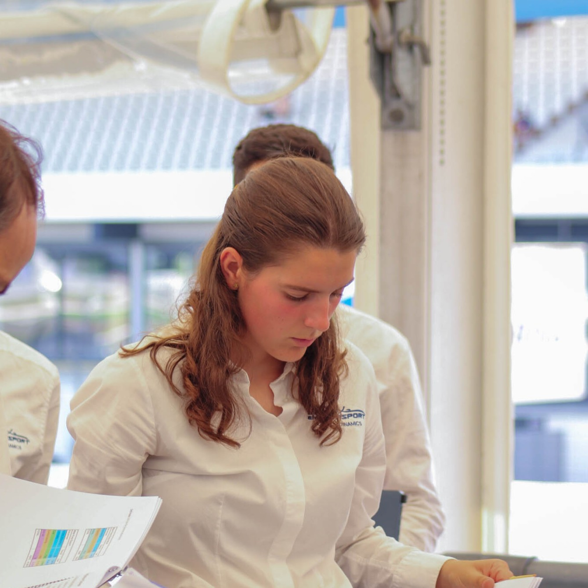
Laia Ripoll
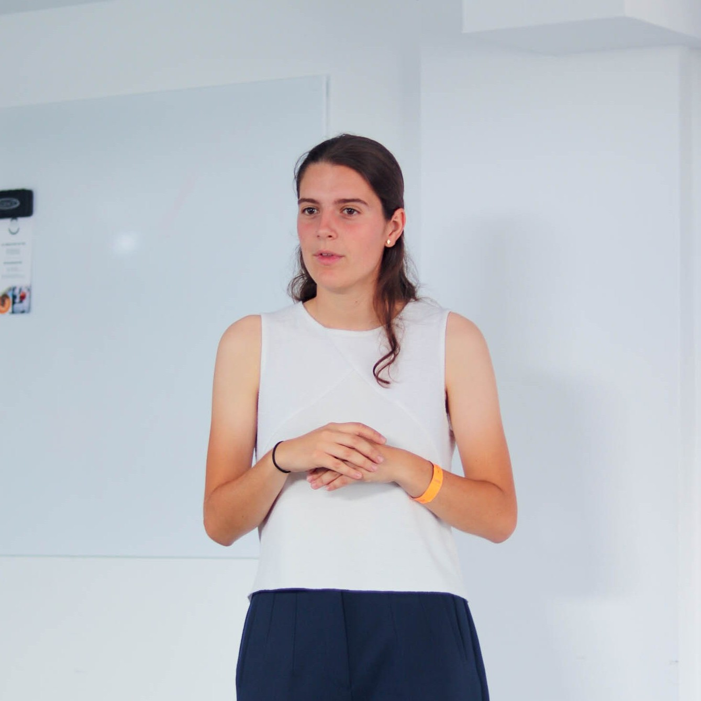
Inca Ciurana
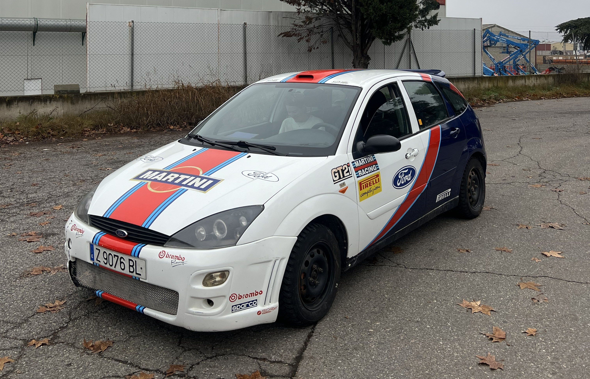
La LIONETA
The LIONETA
Ford Focus 1998. Motor 1.6 Zetec-SE, 100 CV, 0-100 km/h en 11s. Tracció davantera i transmissió manual de 5 velocitats. Ideal per a la UNIRAID i terrenys exigents.
Ford Focus 1998.1.6 Zetec-SE engine, 100 HP, 0-100 km/h in 11s. Front-wheel drive with 5-speed manual transmission. Perfect for UNIRAID and challenging terrain.
UNIRAID
L'UNIRAID és molt més que una competició automobilística, és un rally universitari solidari que combina l'aventura amb acció social. Aquest esdeveniment, conegut també com el "Dakar Universitari", reuneix equips d'estudiants universitaris d'arreu d'Europa que preparen els seus cotxes per emprendre una aventura solidària única.
La competició consisteix en una ruta de set dies pel Marroc, durant la qual els equips recorren escoles i comunitats locals per lliurar material solidari, com ara material escolar, roba, joguines, productes d'higiene i altres de primera necessitat.
Els mesos previs a l'esdeveniment, que té lloc a principis de febrer, els estudiants han de:
Preparar mecànicament el cotxe
Recaptar material solidari
Aconseguir col·laboradors i patrocinadors
Planificar la logística
L'UNIRAID representa així tres valors fonamentals: la solidaritat, la sostenibilitat i la formació.
UNIRAID is much more than a competition, it is a charitable student rally that combines adventure with social action. This event, also known as the "University Dakar," brings together teams of university students from across Europe who prepare their own cars to embark on a unique solidarity adventure.
The competition consists of a seven-day route through Morocco, during which teams visit schools and local communities to deliver charitable supplies, such as school supplies, clothing, toys, hygiene products, and other essentials.
In the months leading up to the event, which takes place in early February, students must:
Mechanically prepare their car
Collect charitable supplies
Secure collaborators and sponsors
Plan logistics
UNIRAID thus represents three core values: solidarity, sustainability, and education.
L'edició 2026 tindrà lloc del 7 al 14 de febrer. Consta de 7 etapes regulars i una etapa marató de dos dies:
Etapa 0: Tànger - El Hajef
Etapa 1: El Hajef - Aufous
Etapa 2: Aufous - Merdani
Etapa 3: Merdani - Erg Chebbi
Etapa 4 & 5: Erg Chebbi - Nkob
Etapa 6: Nkob - Marrakech
Etapa 7: Marrakech - Tànger
The 2026 edition will take place from February 7 to 14. It consists of 7 regular stages and a two-day marathon stage:
Stage 0: Tangier - El Hajef
Stage 1: El Hajef - Aufous
Stage 2: Aufous - Merdani
Stage 3: Merdani - Erg Chebbi
Stages 4 & 5: Erg Chebbi - Nkob
Stage 6: Nkob - Marrakech
Stage 7: Marrakech - Tangier
Compte enrere
Countdown
0
Dies
0
Hores
0
Minuts
0
Segons
0
Days
0
Hours
0
Minutes
0
Seconds
Blog
Blog
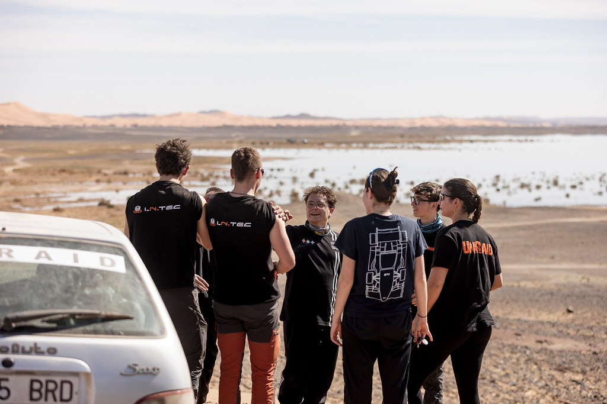
Appreciation Post per UniTeam 🫶
UniTeam, des del primer dia: Dinoco, Marc i Oriol, Super Cinco Nomads, Miguel i Sergi, Trackers, Aniol i Martí, i Dragons del Maresme, Joan i Humbert; Moltíssimes gràcies🫶
Appreciation Post for UniTeam 🫶
UniTeam, from the first day: Dinoco, Marc and Oriol, Super Cinco Nomads, Miguel and Sergi, Trackers, Aniol and Martí, and Dragons del Maresme, Joan and Humbert; Thank you🫶
25/02
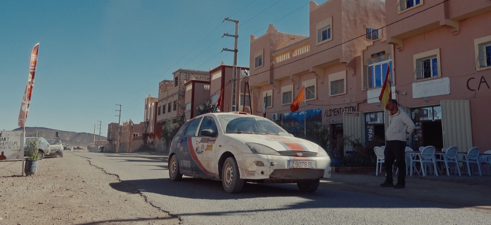
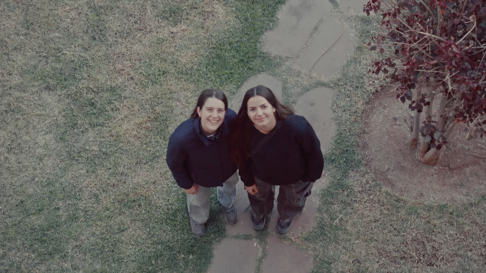
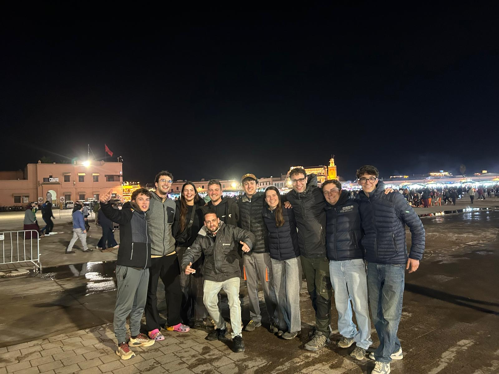
Etapa 6 & 7: Nkob - Marrakech - Tànger
Després d’haver arribat a la meta, començava el camí de tornada cap a casa. Ens esperaven dos dies
de carretera per asfalt fins a arribar primer a Marrakech i després a Tànger. Per arribar a la primera ciutat vam haver de tornar a creuar l’Atlas, aquesta
vegada pel Col du Tichka, un port de muntanya espectacular situat al peu del Toubkal. Va ser una pujada i baixada exigent pel cotxe, però amb vistes increïbles
des del coll.
En arribar a Marrakech, semblava la jungla de cotxes: molt caòtic! Un cop a l’hotel, va tenir lloc la cerimònia de premis i, tot seguit, vam sortir a sopar al
centre de la ciutat. Vam aprofitar també per fer una mica de turisme per la plaça Jemaa el-Fna i els mercats, una manera perfecta de culminar el viatge.
L’endemà, ben d’hora, començava l’última etapa fins a Tànger per agafar el ferry de tornada. Una altra vegada ens vam trobar amb el temporal, i el nostre ferry
va sortir amb retard. Tot i així, vam arribar bé a Algeciras a les 22 h.
Allà començava la part més dura del viatge: la tornada d’Algeciras a casa. Ens esperaven 1.000 km de nit, cansades i ja una mica tristes que l’aventura s’hagués
acabat. Després de moltes begudes energètiques i música, finalment vam arribar a Catalunya el diumenge 15 de febrer a les 10 h del matí, i directament a dormir
per pair la gran aventura que havíem viscut!💛
Stage 6 & 7: Nkob - Marrakech - Tanger
After crossing the finish line, the journey back home began. Two days of driving awaited us, first
to Marrakech and then to Tangier. To reach the first city, we had to cross the Atlas Mountains again, this time via the Col du Tichka, a spectacular mountain
pass at the foot of Toubkal. It was a challenging climb and descent for the car, but the views from the pass were incredible.
Upon arriving in Marrakech, it felt like a jungle of cars—completely chaotic! Once at the hotel, the awards ceremony took place, and afterward we went out for
dinner in the city center. We also took the opportunity to do a bit of sightseeing at Jemaa el-Fna square and the markets, a perfect way to cap off the trip.
The next morning, bright and early, we started the final leg to Tangier to catch the ferry home. Once again, we encountered stormy weather, and our ferry
departed late. Even so, we arrived safely in Algeciras at 10 p.m.
There began the hardest part of the journey: the drive from Algeciras back home. One thousand kilometers at night awaited us, tired and already a little sad
that the adventure had come to an end. After many energy drinks and music, we finally arrived in Catalonia at 10 a.m. on Sunday, February 15, and went straight
to sleep to process the incredible adventure we had lived!💛
25/02
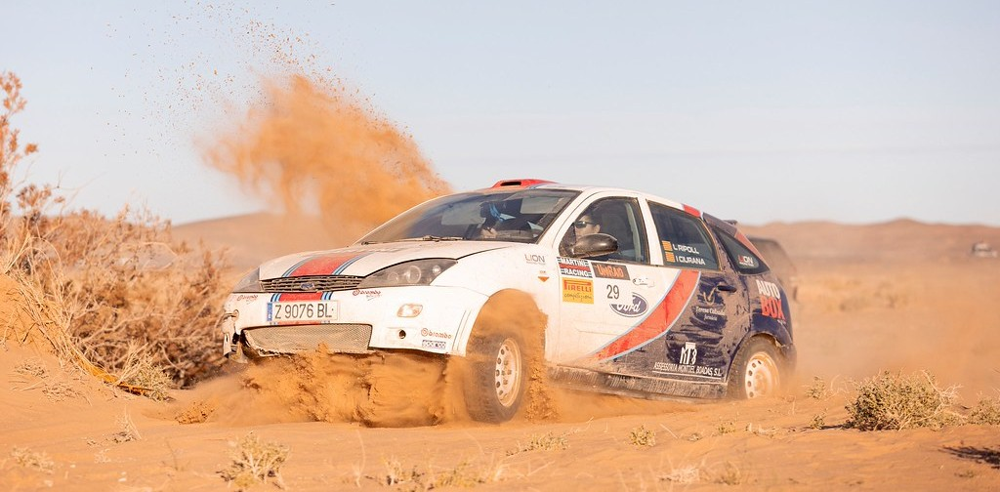
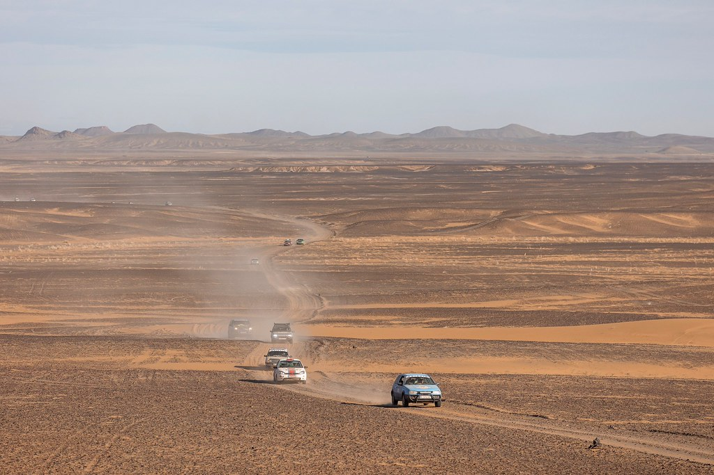
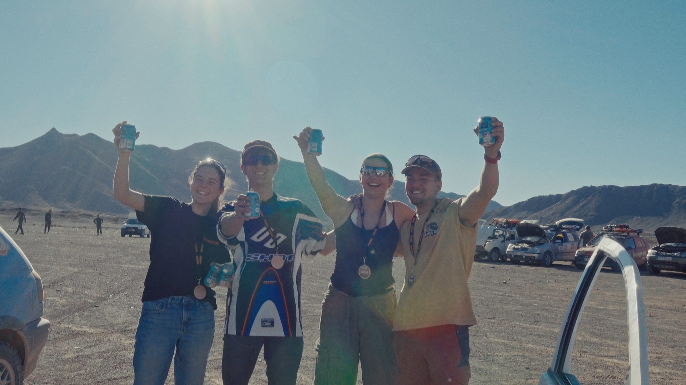
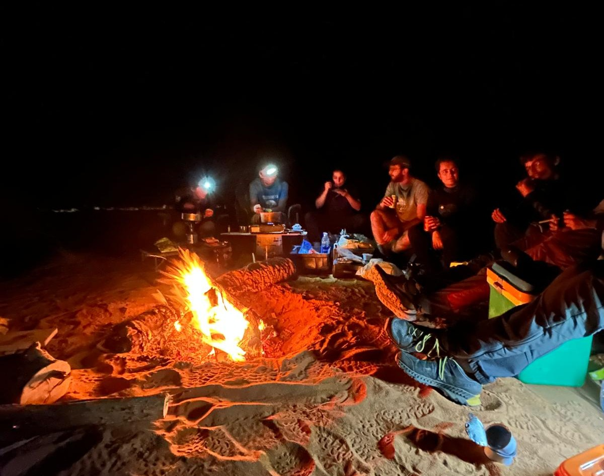
Etapa 4 & 5: Erg Chebbi - Nkob
Les etapes 4 i 5 van formar l’etapa marató, en què la nit entremig no hi havia campament.
Van ser, sens dubte, les etapes més exigents: llargues, difícils i totalment sobre camins de terra i roques. Però al mateix temps,
també van ser les més boniques, travessant poblets i paisatges espectaculars. Vam creuar descampats immensos de terra i sorra, on podies avançar més de 10 km
sense trobar res. Vam passar per algun camp nòmada on vam deixar tot el material solidari que encara portàvem.
La primera nit de l’etapa marató vam fer bivouac prop de Sidi Ali, en una zona preparada per acampar. Vam encendre una foguera i vam dormir sota un cel
estrellat que et deixava sense paraules.
L’endemà començava el segon dia de l’etapa marató i la última jornada de camins pel desert. Havíem d’arribar fins a Nkob, on hi havia la línia de meta.
Vam seguir la brúixola creuant descampats durant quilòmetres i quilòmetres, fins que vam topar amb camins entre poblets i un canyó.
Finalment, vam agafar una carretera asfaltada que ens va portar directament a Nkob.
Quan vam arribar, envoltades de petites muntanyes, vam creuar la línia de meta. Erem finishers de la UNIRAID!🤩 La satisfacció era immensa i l’alegria indescriptible.
Després de les "photofinish", vam córrer directament a la dutxa, ben freda després de tanta calor, i un cop muntada la tenda, vam celebrar l’èxit amb el grup
que havíem fet durant el Raid. Aquell moment de complicitat i alegria va ser el millor tancament per a una aventura inolvidable.
Stage 4 & 5: Erg Chebbi - Nkob
Stages 4 and 5 formed the marathon stage, with no camp set up during the night in between.
They were, without a doubt, the most demanding stages: long, difficult, and entirely over dirt and rocky roads. At the same time, they were also the most
beautiful, passing through small villages and spectacular landscapes. We crossed vast open areas of sand and soil, where you could travel more than 10 km
without encountering anything. We also passed through a nomad camp where we delivered all the humanitarian aid we still had with us.
On the first night of the marathon stage, we bivouacked near Sidi Ali, in an area prepared for camping. We lit a fire and slept under a starry sky that
left us speechless.
The next day began the second day of the marathon stage and the final journey through desert paths. We had to reach Nkob, where the finish line was.
We followed the compass, crossing open plains for kilometers and kilometers, until we came across paths between small villages and a canyon. Finally,
we took a paved road that led us directly to Nkob.
When we arrived, surrounded by small mountains, we crossed the finish line. We were UNIRAID finishers!🤩 The satisfaction was immense and the joy indescribable.
After the “photofinish,” we went straight to the shower, very cold after so much heat, and once the tent was set up, we celebrated the achievement with the group
we had formed during the Raid. That moment of connection and joy was the perfect ending to an unforgettable adventure.
24/02
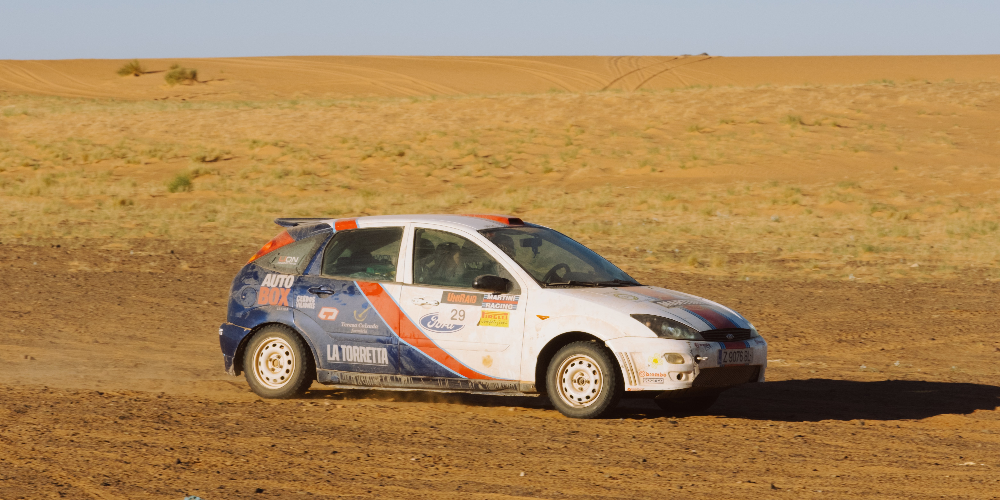
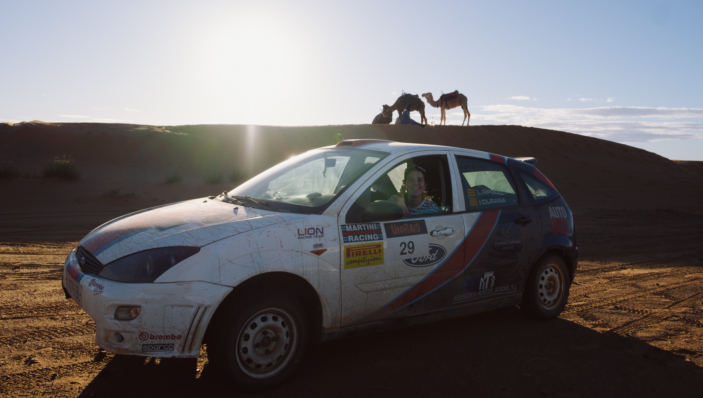
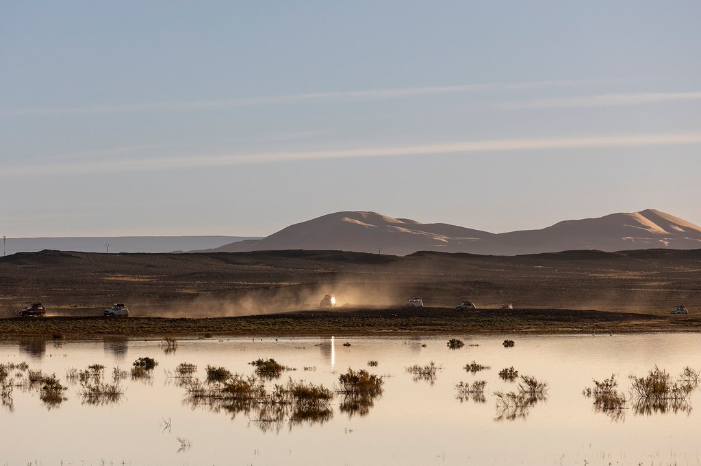
Etapa 3: Erg Chebbi - Erg Chebbi
L’etapa 3 va consistir en donar una volta per les dunes d’Erg Chebbi. Vam travessar dunes, khettaras i
oueds, una experiència increïble. Una khettara és un canal subterrani que transporta aigua des d’un aqüífer fins a la superfície per regar camps en zones
desèrtiques. Aquella etapa va ser pura navegació, i tot i que ens vam perdre més d’una vegada, vam arribar sense problemes. Vam veure dromedaris i oasis
inimaginables, com el lac Dayet Srij.
Vam arribar tan d’hora que vam poder dinar al restaurant Jordi i Haima, un restaurant prop de Merzouga de cuina catalana. En Jordi, originari de Vic, ens
va fer sentir com a casa, com vam agrair una hamburguesa i botifarra catalana al mig del desert!😌
Quan vam arribar al campament, vam haver d’arreglar el tub d’escapament, que s’havia desenganxat de tant tocar el terra, ja que els camins d’aquesta etapa
eren molt rocossos. Va ser divertit anar “escape lliure” per un dia i posar a prova el nostre cotxe.
Un cop tot arreglat, vam participar en l’etapa nocturna. Amb equips aleatoris de deu cotxes, completament de nit i amb un roadbook personalitzat,
havíem de trobar tres fites per completar l’etapa. Creuar camps i oueds a les fosques es va complicar molt: va ser un caos, i només vam aconseguir trobar una fita.
Tot i així, ens vam divertir molt i vam acabar la nit amb uns focs artificials al mig del desert, un final màgic. I a dormir que l'endemà tocava l'etapa marató!
Stage 3: Erg Chebbi - Erg Chebbi
Stage 3 consisted of taking a tour of the dunes of Erg Chebbi. We crossed dunes, khettaras, and oueds,
an incredible experience. For those who don’t know, a khettara is an underground channel that transports water from an aquifer to the surface to irrigate fields
in desert areas. This stage was pure navigation, and although we got lost more than once, we arrived without any problems. We saw dromedaries and unimaginable
oases, such as Lake Dayet Srij.
We arrived so early that we were able to have lunch at the restaurant Jordi i Haima, a place near Merzouga serving Catalan cuisine. Jordi, originally from Vic,
made us feel at home, how we appreciated a Catalan hamburger and botifarra right in the middle of the desert!😌
When we returned to the camp, we had to fix the exhaust pipe, which had come loose from constantly scraping the ground, as the tracks in this stage were very
rocky. It was fun to have a day of “exhaust free” and really put our car to the test.
Once everything was fixed, we took part in the night stage. With randomly assigned teams of ten cars, completely in the dark and using a personalized roadbook,
we had to find three checkpoints to complete the stage. Crossing fields and oueds at night was very challenging—it was chaos, and we only managed to find one
checkpoint. Even so, we had a lot of fun and ended the night with fireworks in the middle of the desert, a truly magical finale. And then to bed, because the
next day awaited the marathon stage!
23/02
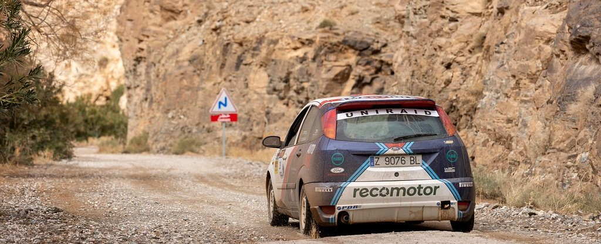
Etapa 1 & 2: Arzou - Er Rachidia - Erg Chebbi
El segon dia ens vam despertar a Arzou després d’una nit de pluja intensa. La primera etapa ens
portava a creuar l’Atlas. Tot i això, a causa del temporal nocturn, vam haver de canviar la ruta prevista i rodejar les muntanyes per carreteres d’asfalt.
Després de quatre hores de conducció per asfalt, finalment vam agafar un camí de terra. Allà començava de veritat l’aventura.
El nostre primer contacte amb camins de terra va ser tota una experiència, per dir-ho suaument. Portàvem un cotxe molt baix que tocava el terra constantment,
però, tot i això, va aguantar com un autèntic campió. Aquell dia vam passar per unes mines abandonades, envoltades d’un paisatge espectacular que ens deixava
sense alè.
Vam arribar al campament cap a les cinc de la tarda. Només arribar, ja sabíem que havíem de solucionar el problema de la baixa alçada del cotxe, que fregava
roques i sots dels camins contínuament. Gràcies al grup que havíem format al matí, l’equip Dinoco, Super Cinco i Trackers, vam aconseguir canviar les molles i
posar uns tacos per elevar la suspensió davantera.
Després de modificar el cotxe, vam gaudir d’una dutxa i d’un sopar calent, molt necessari després de la nit anterior. I a dormir, perquè l’endemà ens esperaven
les dunes d’Erg Chebbi a Merzouga!
L’etapa 2 va ser completament desèrtica, travessant camins de sorra i oueds. Quina diversió conduir entre dunes! Evidentment, ens vam quedar enterrades en algun
moment 😄, però la Lioneta no va tenir cap problema i va avançar com una veritable bestia amb la nova suspensió davantera. Ja estàvem ben endins del país i
començàvem a descobrir paisatges desèrtics autèntics i petits poblets tradicionals. Vam passar per la Ciutat d’Orió, un castell fascinant dissenyat per l’artista
Alemany Hannsjörg Voth que reprodueix la forma de la constel·lació, i també per l’antiga presó portuguesa de Gara Medouar, que ha aparegut en diverses pel·lícules
famoses com Spectre i The Mummy, gràcies al seu paisatge espectacular i gairebé cinematogràfic.
A les quatre de la tarda vam arribar al campament, amb molt de marge respecte al temps previst. Estava situat al mig de les dunes: ja érem al Sahara!
Una experiència increïble i completament màgica.
Stage 1 & 2: Arzou - Er Rachidia - Erg Chebbi
On the second day, we woke up in Arzou after a night of heavy rain. The first stage was supposed
to take us across the Atlas Mountains. However, due to the storm overnight, we had to change the planned route and go around the mountains on paved roads.
After four hours of driving on asphalt, we finally reached a dirt track. That’s when the adventure truly began.
Our first encounter with dirt roads was quite an experience, to say the least. We were driving a very low car that kept scraping the ground constantly,
but even so, it held up like a true champion. That day, we passed by some abandoned mines, surrounded by a spectacular landscape that took our breath away.
We arrived at the camp around five in the afternoon. As soon as we got there, we knew we had to fix the low clearance of the car, which kept hitting rocks
and potholes along the paths. Thanks to the group we had formed in the morning, the Dinoco, Super Cinco, and Trackers teams, we managed to change the springs
and add blocks to raise the front suspension.
After modifying the car, we enjoyed a shower and a warm meal, very much needed after the previous night. Then it was off to sleep, because the next day
awaited the dunes of Erg Chebbi in Merzouga!
Stage 2 was entirely desert, crossing sandy tracks and dry riverbeds. Driving through the dunes was so much fun! Of course, we got stuck at some point 😄,
but the Lioneta had no problem and powered through like a true beast with the new front suspension. We were now deep in the country, discovering authentic
desert landscapes and small traditional villages. We passed through the City of Orion, a fascinating castle designed by the German artist Hannsjörg Voth
that replicates the shape of the constellation, and also the old Portuguese prison of Gara Medouar, which has appeared in several famous films like
Spectre and The Mummy, thanks to its spectacular, almost cinematic landscape.
By four in the afternoon, we arrived at the camp well ahead of schedule. It was located right in the middle of the dunes: we were finally in the Sahara!
An incredible and completely magical experience.
22/02
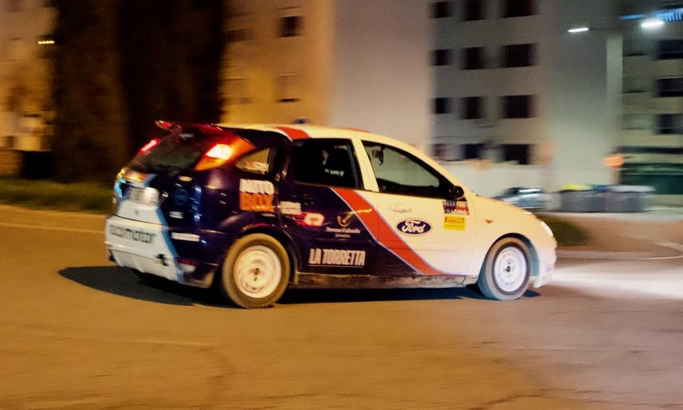
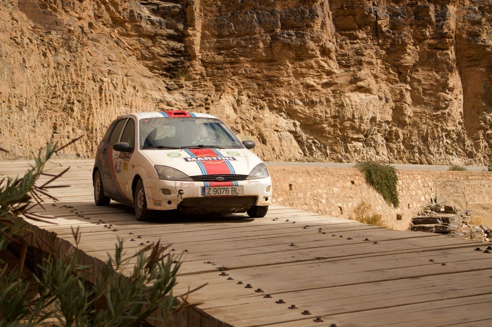
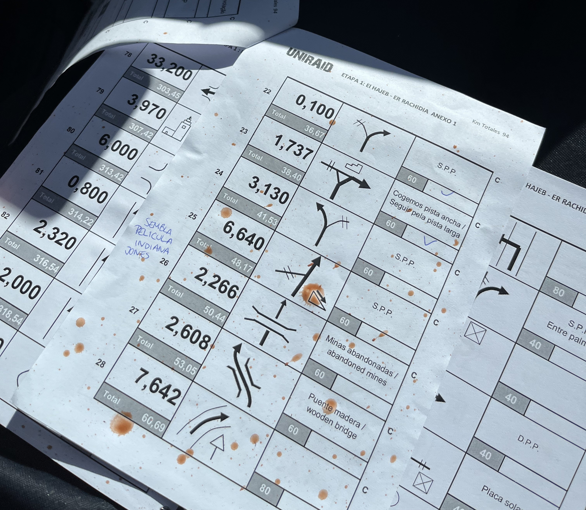
Etapa 0: Catalunya - Tànger - Arzou
L’aventura va començar el divendres 6 de febrer, quan a les set del matí vam engegar motors rumb a Algeciras.
Ens esperaven quinze hores llargues de carretera, amb el cotxe carregat fins dalt de material i il·lusió. Vam arribar-hi a les deu de la nit,
cansades però amb moltes ganes de començar la gran aventura.
L’endemà, encara de nit, ens vam llevar per agafar el ferri de les set. El mar estava revoltat i feia dies que s’anunciaven cancel·lacions a l’estret,
però vam tenir sort: el nostre va sortir. Creuar l’Estret de Gibraltar enmig del temporal va ser tota una declaració d’intencions, aquell viatge seria memorable.
A mig matí vam arribar a Tànger. Després dels tràmits, de descarregar el cotxe i canviar els diners a dirhams, vam posar rumb cap al primer campament, a Arzou.
Els primers quilòmetres per terres marroquines van ser un bany de realitat i d’humanitat. Vam començar a descobrir un país de contrastos: poblets enmig
de paisatges immensos, mercats improvisats, camions carregats fins a dalt, persones caminant vora la carretera. Durant tot el Raid, també vam veure situacions
difícils, que ens van fer conscients dels privilegis amb què vivim. Més que un xoc cultural, va ser una lliçó d'humanitat.🌍
Cap al vespre vam arribar al campament d’Arzou. Ens esperaven haimes tradicionals i un equip local que ens va acollir amb molt bona hospitalitat. Vam descarregar
tot el material solidari que portàvem, que un camió de la Uniraid transportaria fins al següent campament, on el lliuraríem a escoles de la zona. Després de les
inspeccions tècniques, ens van donar els dorsals i el roadbook. L’etapa 0 estava superada: ja formàvem part, oficialment, de l’aventura.
Aquella nit vam gaudir del primer sopar, un bufet de cuina local, i del primer briefing per familiaritzar-nos amb el recorregut. L’ambient era càlid i proper,
ple de companyerisme entre els participants i l’equip de l’organització.
El que no sabíem és que a les onze de la nit el cel es desfermaria. La pluja va començar amb força i no va donar treva en tota la nit. Dormir va ser gairebé
impossible. L’endemà, les condicions de les carreteres van obligar a modificar la ruta. I així, entre tempestes i somriures, s’iniciava de debò la nostra travessia
pel Marroc: un viatge d’aventura, sí, però sobretot d’aprenentatge, respecte i descobriment.
Stage 0: Catalunya - Tanger - Arzou
The adventure began on Friday, February 6th, when at seven in the morning we set off for Algeciras.
Fifteen long hours of driving awaited us, with the car packed to the brim with gear and excitement. We arrived at ten in the evening, tired but eager to start
the great adventure.
The next day, still in the early morning, we woke up to catch the 7 a.m. ferry. The sea was rough, and ferries had been canceled for days, but we were lucky:
ours sailed. Crossing the Strait of Gibraltar in the middle of the storm was a bold statement, this trip was going to be unforgettable.
By mid-morning, we arrived in Tangier. After handling the paperwork, unloading the car, and exchanging money for dirhams, we set course for the first camp in Arzou.
The first kilometers through Moroccan lands were a reality and humanity check. We began to discover a country of contrasts: small villages in the middle of vast
landscapes, makeshift markets, trucks loaded to the brim, and people walking along the roadside. Throughout the Raid, we also saw difficult situations that made
us aware of the privileges we enjoy. More than a cultural shock, it was a lesson in humanity.🌍
By late afternoon, we reached the Arzou camp. Traditional tents awaited us, and a local team welcomed us with warm hospitality. We unloaded all the humanitarian
supplies we had brought, which a Uniraid truck would transport to the next camp to be delivered to schools in the area. After technical inspections, we were given
our race numbers and the roadbook. Stage 0 was completed: we were officially part of the adventure.
That night, we enjoyed our first dinner, a buffet of local cuisine, and the first briefing to familiarize ourselves with the route. The atmosphere was
warm and friendly, full of camaraderie among the participants and the organizing team.
What we didn’t know was that at eleven o’clock the sky would open. The rain started heavily and didn’t let up all night. Sleeping was almost impossible. The next
day, the road conditions forced a change in the route. And so, between storms and smiles, our journey through Morocco truly began: an adventure, yes, but above all
a journey of learning, respect, and discovery.
21/02
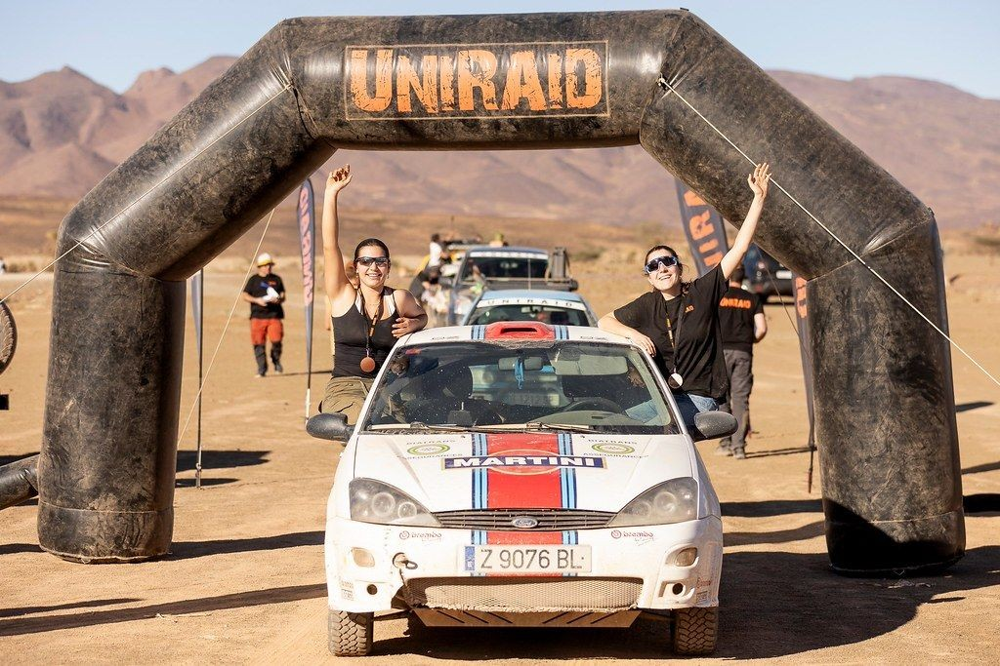
Som Finishers de UNIRAID 2026!!🏁
Ja fa una setmana que vam tornar d’aquesta aventura i encara arrosseguem una bona ressaca emocional.
Ha estat una experiència inoblidable, ens hem sentit com si fóssim al Dakar!
Moltes gràcies a totes les persones que ens heu donat suport i que heu fet possible aquesta aventura. Sense vosaltres no hauria estat possible! 🙏
En els pròxims dies anirem penjant fotos i us explicarem com van anar les diferents etapes!
We are Finishers of UNIRAID 2026!!🏁
It’s been a week since we returned from this adventure, and we’re still feeling the emotional hangover.
It has been an unforgettable experience, we felt like we were at the Dakar!
A huge thank you to everyone who supported us and made this adventure possible. Without you, it wouldn’t have been possible! 🙏
In the coming days, we’ll be sharing photos and telling you how each stage went!
16/02
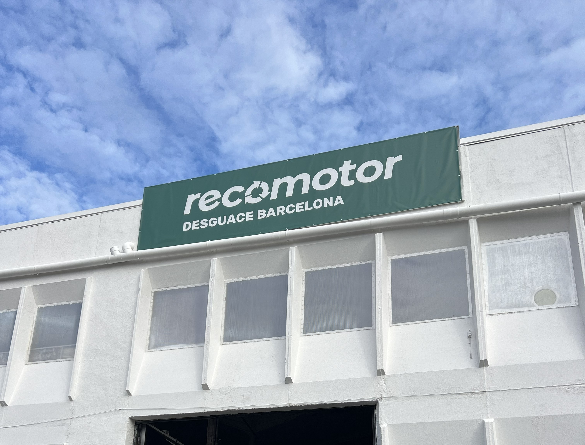
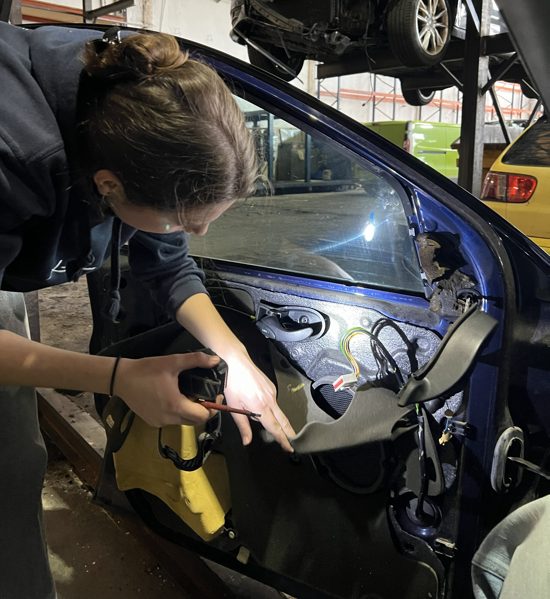
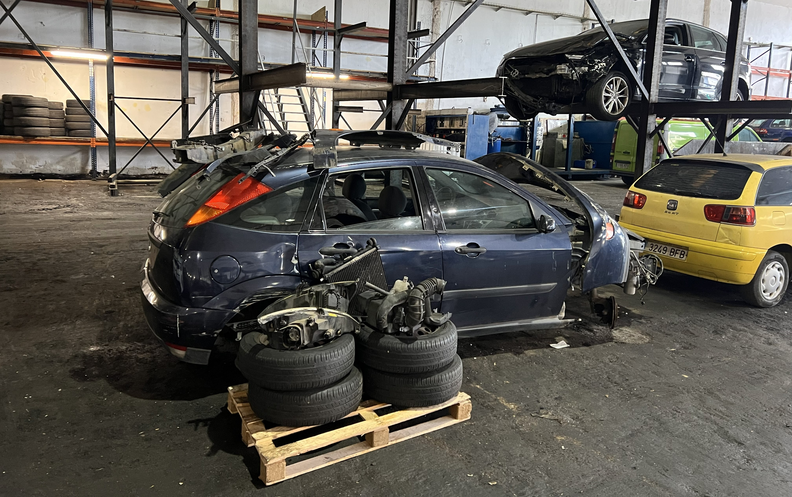
La LIONETA rep suport de Recomotor♻️
Divendres vam visitar el local de Recomotor a Sant Andreu de la Barca per buscar les peces que necessitàvem per a la LIONETA.
Recomotor és una empresa catalana que dona segona vida a les peces dels vehicles mitjançant la recuperació, revisió i comercialització de recanvis reutilitzats per a cotxes. Des de la seva fundació l’any 2021, s’ha consolidat com un referent en economia circular aplicada al sector de l’automoció, transformant els desguassos tradicionals en centres moderns de desmuntatge i distribució de peces per a tallers i professionals.
Durant la visita vam aconseguir diversos components per al nostre cotxe, com ara dos conjunts de llanda i pneumàtic, el panell de control, les molles del maleter, les llums interiors, entre d’altres.
Moltes gràcies a tot l’equip de Recomotor per rebre’ns tan bé i per col·laborar amb la nostra iniciativa!🙏
The LIONETA gets support from Recomotor♻️
On Friday, we visited Recomotor’s facility in Sant Andreu de la Barca to pick up the parts we needed for the LIONETA.
Recomotor is a Catalan company that gives vehicles’ parts a second life through the recovery, inspection, and sale of reused car components. Since its founding in 2021, it has become a reference in circular economy within the automotive sector, transforming traditional scrapyards into modern dismantling and distribution centers for workshops and professionals.
During our visit, we picked up several components for our car, including two sets of wheels and tires, the control panel, trunk springs, interior lights, and more.
Many thanks to the entire Recomotor team for welcoming us so warmly and for supporting our initiative!🙏
20/12
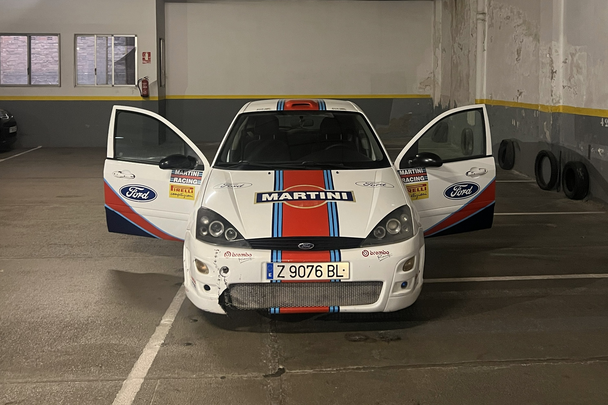
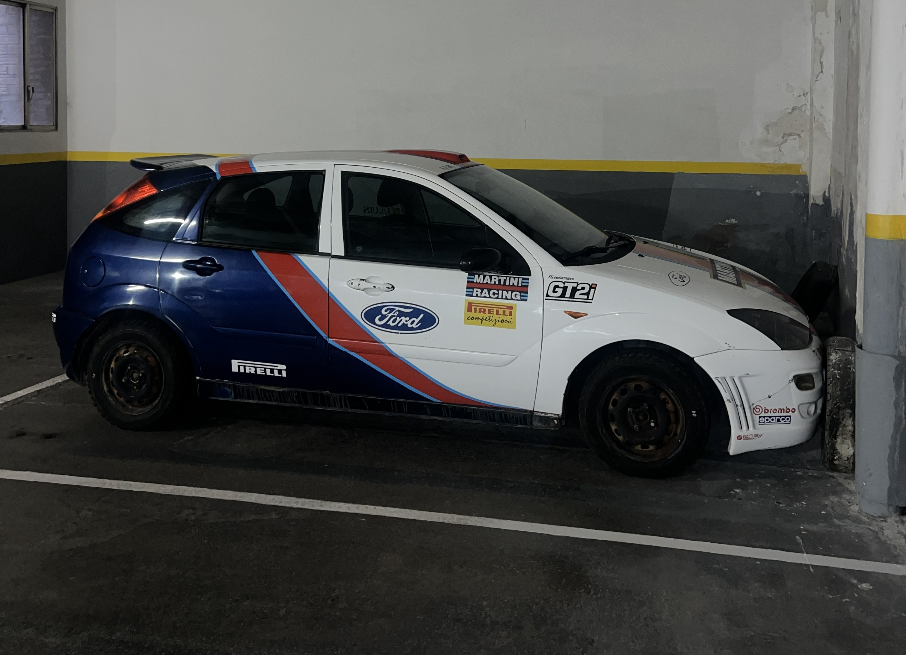
La LIONETA ja és aquí🚀
Us presentem la LIONETA: el cotxe amb el qual participarem a la UNIRAID 2026.
Es tracta d’un Ford Focus de l’any 1998, equipat amb un motor Ford 1.6 Zetec-SE de 100 cavalls, 4 cilindres i una cilindrada de 1.596 cm³.
Durant els pròxims mesos el prepararem per afrontar aquest gran repte. Entre les modificacions obligatòries, instal·larem ganxos de remolc i un cobre càrter per protegir el motor en els terrenys més exigents.
A més, també hi farem altres modificacions extra per convertir-la en un autèntic supercotxe del desert!!
The LIONETA is here🚀
Introducing the LIONETA: the car with which we will take part in UNIRAID 2026.
It is a 1998 Ford Focus, equipped with a 1.6 Zetec-SE engine producing 100 horsepower, with 4 cylinders and a displacement of 1,596 cm³.
Over the coming months, we will prepare it to face this great challenge. Among the mandatory modifications, we will install tow hooks and an engine skid plate to protect the engine on the most demanding terrain.
In addition, we will also make extra modifications to turn it into a true desert supercar!!
15/12
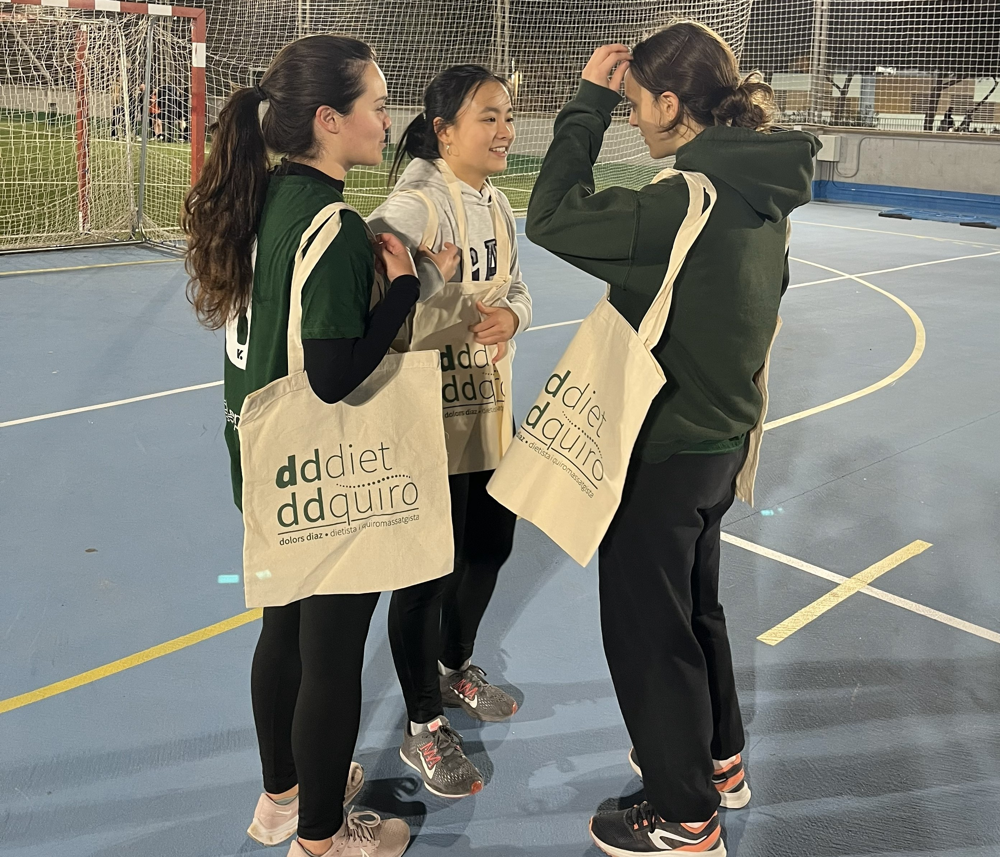
Futbol solidari amb Dddiet⚽
Ahir vam jugar per una bona causa! Vam organitzar un partit de futbol solidari per recaptar fons i donar suport al nostre projecte.
L’equip guanyador va rebre com a premi unes bosses de tela de Dddiet, un projecte professional especialitzat en nutrició i salut, liderat per Dolors Díaz, dietista i quiromassatgista.
Dddiet aposta per una alimentació conscient i equilibrada com a eina clau per millorar la salut i el benestar, acompanyant les persones en un procés de reeducació alimentària personalitzada.
Moltes gràcies, Dolors, per donar suport al nostre projecte!🙏
Charity football with Dddiet⚽
Yesterday we played for a good cause! We organized a charity football match to raise funds and support our project.
The winning team received Dddiet tote bags as a prize. Dddiet is a professional project specialized in nutrition and health, led by Dolors Díaz, a dietitian and massage therapist.
Dddiet promotes conscious and balanced eating as a key tool to improve health and well-being, supporting people through a personalized nutritional re-education process.
Thank you very much, Dolors, for supporting our project!🙏
3/12
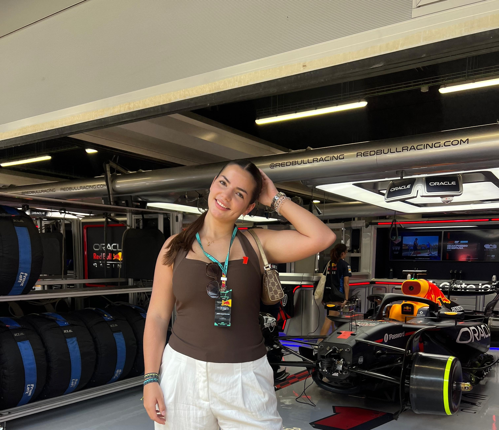
Coneix a l'equip!
Hola! Sóc la Laia Ripoll, tinc 23 anys i sóc de Lleida.
M’apassiona la Fórmula 1, viatjar i descobrir idees noves.
Estudio Enginyeria Industrial i he pogut endinsar-me en el món del disseny mecànic, on he descobert que m’encanta entendre i solucionar problemes d'enginyeria.
Dins l’equip, porto les xarxes socials i el pressupost, una combinació que em permet barrejar creativitat amb organització i donar personalitat a aquest projecte.
Tinc moltes ganes de seguir sumant i viure aquesta experiència amb moltíssima il·lusió!
Meet the team!
Hi! I’m Laia Ripoll, I’m 23 years old and I’m from Lleida.
I’m passionate about Formula 1, travelling, and discovering new ideas.
I’m studying Industrial Engineering and have had the chance to dive into the world of mechanical design, where I’ve realized how much I enjoy understanding engineering challenges and finding solutions.
Within the team, I’m in charge of social media and the budget, a combination that lets me blend creativity with organization and give this project its own personality.
I’m really excited to keep growing and experience this journey with tons of enthusiasm!
16/11
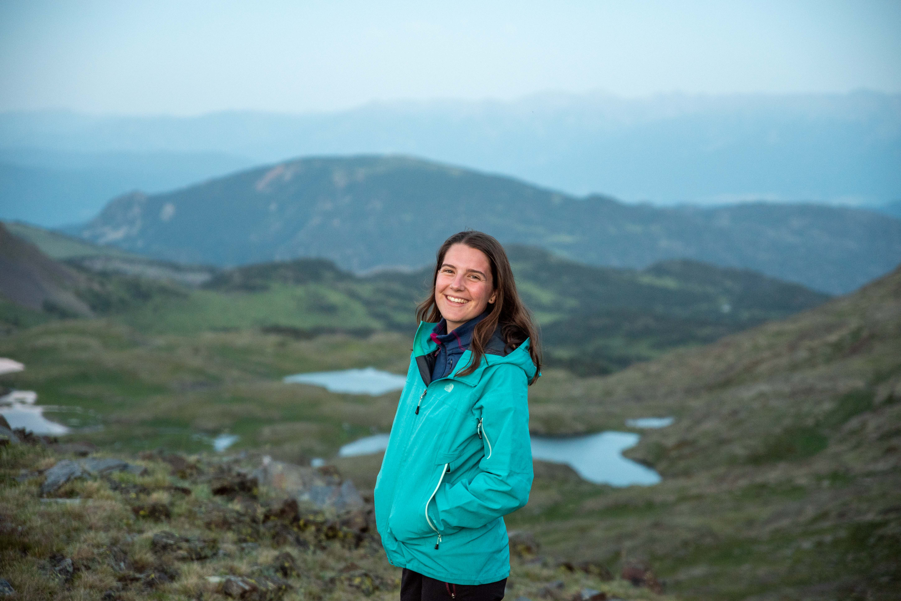
Coneix a l'equip!
Hola! Sóc l’Inca Ciurana, tinc 22 anys i sóc de Girona.
Sóc una apassionada dels esports i dels cotxes, i m’encanta posar-me a treballar en projectes nous i afrontar reptes que em facin créixer.
Estudio Enginyeria Industrial i treballo en el sector de l’automoció, una combinació que em permet unir la meva curiositat tècnica amb la passió per apendre.
A l’equip, m’encarrego de la pàgina web i del contacte amb col·laboradors, i tinc moltes ganes de viure aquesta aventura amb energia i il·lusió!
Meet the team!
Hi! I’m Inca Ciurana, I’m 22 years old and I’m from Girona.
I’m passionate about sports and cars, and I love getting involved in new projects and taking on challenges that help me grow.
I’m studying Industrial Engineering and working in the automotive sector, a combination that allows me to bring together my technical curiosity with my love of learning.
In the team, I’m in charge of the website and collaborator communications, and I’m really excited to embark on this adventure with energy and enthusiasm!
10/11
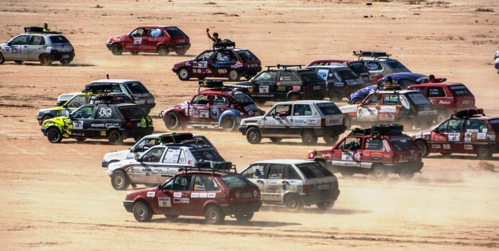
Busquem col·laboradors!
Com pots col·laborar amb Lion Racing Team?
Patrocinadors: busquem empreses o entitats que vulguin donar suport al projecte mitjançant contribucions econòmiques, serveis o components per al cotxe.
Donacions solidàries: també recollim material escolar, productes d’higiene i altres articles essencials que lliurarem directament a les comuintats de Marroc.
Campanya GoFundMe: si vols sumar-te de manera fàcil i directa, pots fer la teva aportació a la nostra campanya a GoFundMe.
Cada aportació és un quilòmetre més a prop de generar un impacte positiu. Ajuda'ns a fer realitat aquesta aventura solidària!🌍
We are searching for sponsors!
How can you support LION Racing Team?
Sponsors: we’re looking for companies or organizations that want to support the project through financial contributions, services, or car components.
Solidarity donations: we also collect school supplies, hygiene products, and other essential items that we’ll deliver directly to communities in Morocco.
GoFundMe campaign: if you’d like to join us in an easy and direct way, you can make a contribution through our GoFundMe campaign.
Each contribution brings us one kilometer closer to making a positive impact. Help us make this solidarity adventure a reality!🌍
30/10
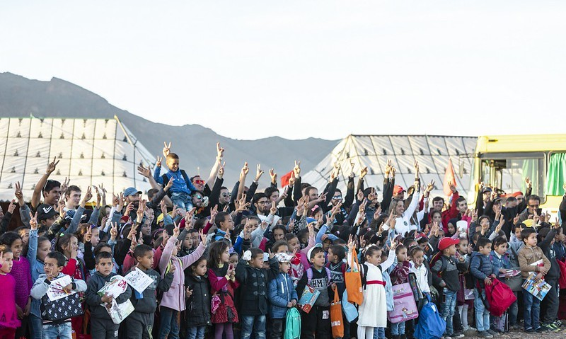
Una missió solidària
La UniRaid és més que una aventura, és un projecte amb propòsit solidari.
Cada equip participant transporta fins a 40 kg de material solidari destinats a les comunitats del desert que més ho necessiten.
La nostra missió és lliurar materials de primera necessitat que contribueixin a millorar el seu dia a dia: roba, material escolar, productes d’higiene, joguines i molt més.
Creiem que la solidaritat també es pot conduir, i que cada quilòmetre recorregut pot marcar una diferència real.
A mission of solidarity
UniRaid is more than an adventure, it's a project with a purpose.
Each participating team carries up to 40 kg of essential supplies to support communities in the desert that need them most.
Our mission is to deliver everyday essentials that help improve people’s lives: clothing, school materials, hygiene products, toys, and more.
We believe that solidarity can also be driven, and that every kilometer we travel can make a real difference.
13/10
Per què LION?
Lion racing team va nèixer d’una amistat amb ganes d’aventura i de formar part d’un projecte amb propòsit. El nom de l’equip és un joc de paraules amb les nostres inicials, destacades en vermell al logo, i la paraula “ON”, que simbolitza l’energia i el compromís que tenim amb aquest projecte.
Why LION?
Lion Racing Team was born from a friendship driven by a spirit of adventure and the will to be part of a meaningful project. The team’s name is a creative blend of our initials, highlighted in red in the logo, and the word ‘ON,’ symbolizing the energy and commitment we bring to this project.
03/10
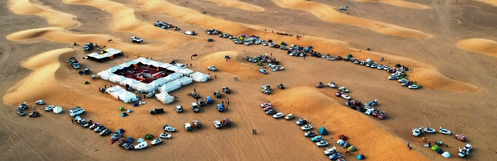
Presentació de LION Racing Team
Presentació de l'equip a les xarxes socials. Segueix-nos!
Launch of LION Racing Team
Launch of the team on social media. Follow us!
@lionracing.uniraid
@lionracing.uniraid
Estigueu atents, aviat presentarem el nostre cotxe🚀
Stay tuned, soon we will present our car🚀
24/09
Col·labora
Sponsor us
Actualment, estem buscant patrocinadors que vulguin donar suport a la nostra missió mitjançant contribucions econòmiques, serveis o components del cotxe.
També cerquem donacions solidàries, com ara material escolar, productes d’higiene i altres articles essencials.
A canvi, oferim una gran visibilitat i promoció de marca a través de contingut original i atractiu.
Col·laborant amb nosaltres, la vostra empresa s'integra en un projecte comunitari que genera un canvi real i
associa la vostra marca amb un impacte social significatiu.
We are actively seeking sponsors to support our mission through financial contributions, services, or car components.
We also welcome in-kind donations such as school supplies, hygiene products, and other essential items.
In return, we provide high-impact visibility and brand promotion through original and engaging content.
By partnering with us, your company becomes part of a community project that generates real-world impact, directly connecting your brand to meaningful social change.
PROMOCIÓ
Logotip al cotxe i samarreta
Posts a les xarxes socials
PROMOTION
Logo on the car & merchandise
Posts on social media
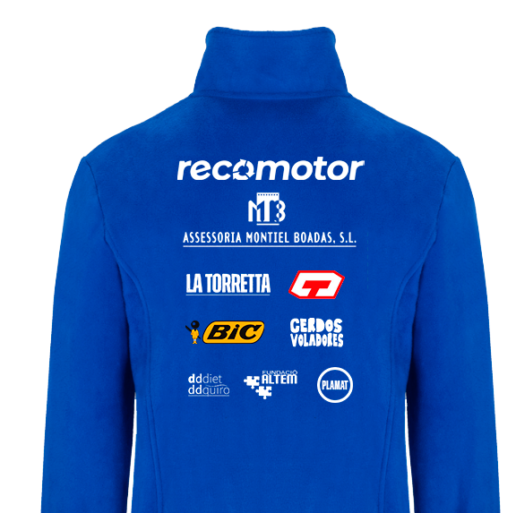
VISIBILITAT
Exposició de marca
Presència als esdeveniments
VISIBILITY
Brand exposure
Presence in our events
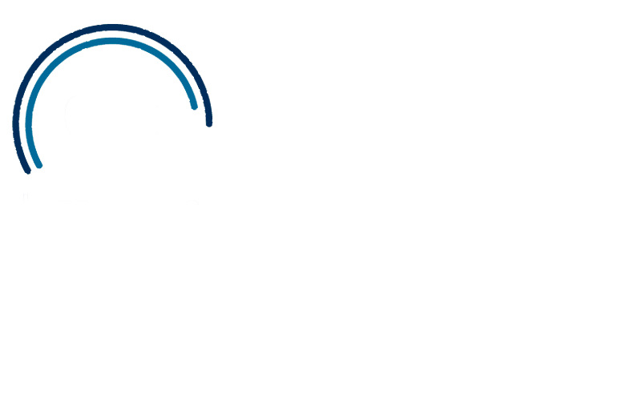
IMPACTE SOCIAL
Aportació i associació a un projecte solidari
SOCIAL IMPACT
Contribution and association with a charitable project
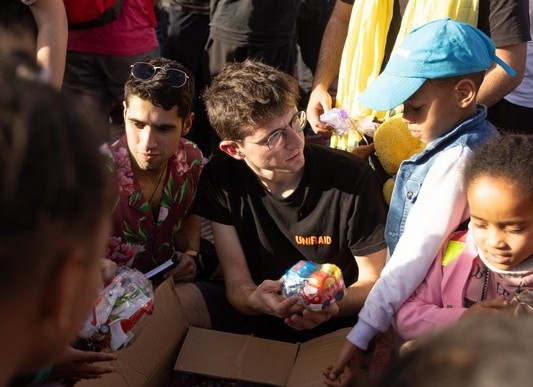
Contacta'ns i estarem encatades de proporcionar més informació sobre el patrocini!
Contact us and we will be delighted to provide more information about the sponsorship!